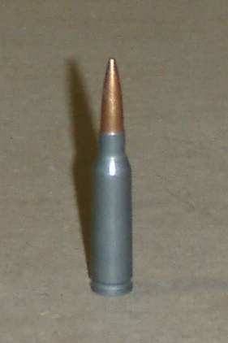

История
Положительный опыт использования малокалиберного патрона США заставил СССР начать работу по разработке аналогичного автоматного патрона, но уже существовали предложения по разработке малокалиберного патрона. В 1966 году главное ракетно-артиллерийское управление выдало задание на разработку нового автомата под калибр 5,60 мм — так обозначался калибр малоимпульсного патрона по дну нарезов. После принятого в СССР измерения калибра по полям нарезов обозначался как 5,45 мм. Данный патрон был разработан в ЦНИИточмаш.
Уменьшение калибра давало уменьшение массы патрона более чем в 1,5 раза. Значительно увеличивалась начальная скорость пули, траектория полёта стала более настильной, дальность прямого выстрела увеличивалась примерно на 100 м, уменьшались время полёта пули к цели и её снос боковым ветром, импульс отдачи — все это способствовало улучшению меткости, особенно при стрельбе очередями. То есть речь шла не просто об улучшении кучности стрельбы, а об общем повышении боевой эффективности комплекса «патрон-оружие». Конструкция удлинённой пули позволила обеспечить сочетание устойчивости на траектории с убойным действием не хуже, чем у пули патрона образца 1943 года.
В конкурсе на новый автомат принял участие ряд конструкторов и конструкторских групп от Ижевского машиностроительного завода, ЦНИИточмаш, Ковровского механического завода. На «Ижмаш» прорабатывалось несколько вариантов малокалиберного автомата. М. Т. Калашников и А. Д. Крякушин создавали его на основе находившегося в производстве автомата АКМ. Из 10 представленных на конкурсные испытания образцов до заключительных войсковых испытаний дошли: ковровский автомат СА-006 А. С. Константинова со сбалансированной автоматикой и ижевский автомат А-3 с «классической» автоматикой.
Жёсткие испытания выявили, что образец А. С. Константинова имел преимущества по эффективности стрельбы, но по служебно-эксплуатационным и производственно-экономическим характеристикам преимущества были у А-3. Конструкция нового автомата повторяла АКМ. Существенным новшеством явилось двухкамерное дульное устройство, выполняющее задачи дульного тормоза, компенсатора и пламегасителя. Массивный дульный тормоз позволил снизить и так не слишком сильную отдачу ещё больше, что позволило улучшить точность и кучность стрельбы, особенно быстрыми одиночными выстрелами и очередями, однако кучность по сравнению с автоматическими винтовками на платформе AR-15 отстаёт.
Постановлением ЦК КПСС и Совета Министров СССР № 54-29 от 18 января 1974 года и последующим Приказом Министра обороны СССР № 49 от 18 марта 1974 года на вооружение был принят новый унифицированный комплекс автомата Калашникова, включавший четыре базовые модели автомата и столько же ручных пулемётов. В условиях «гонки вооружений» возможность быстро поставить новое семейство оружия на производство, упростить его освоение и эксплуатацию в войсках играла не последнюю роль. Наравне с предыдущим, к автоматам был принят новый штык-нож с упрощённой формой упрочнённого клинка и более удобной рукояткой.
Патрон 5,45 мм

Описание конструкции
Конструкция нового автомата повторяла АКМ, с которым унифицировано 9 узлов и 52 детали АК-74. Общий объём технологических операций на АК-74 составил около 70 %. Большее число деталей автомата изготавливали из точных литых заготовок по выплавляемым моделям. Стволы делались ротационной ковкой с одновременным формированием канала ствола и патронника. Каналы стволов хромировали по улучшенной технологии. Был разработан и внедрён автоматизированный метод испытаний на меткость с использованием электронно-вычислительной техники.